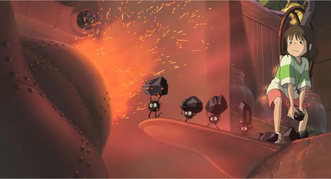
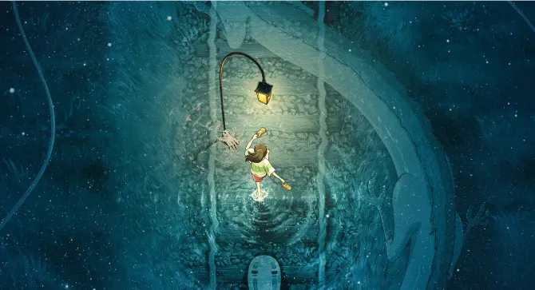

Le Voyage de Chihiro : Un monde magique à découvrir
Le voyage de chihiro
Le cinéma d'animation japonais a le don de nous plonger dans des univers extraordinaires, mais aucun film n'a captivé le
public autant que "Le Voyage de Chihiro".
Réalisé par Hayao Miyazaki, ce chef-d'œuvre nous emmène dans un monde fantastique empreint de mystère. Découvrons
l'univers de ce film culte en trois actes : l'histoire, l'analyse, et l'impact sur les spectateurs.
par Viktor Ghirardelli
Publié aujourd’hui à 14h45 | Temps de lecture 1 min
L'univers et l'histoire ensorcelante
"Le Voyage de Chihiro" narre l'histoire de Chihiro, une jeune fille de 10 ans qui, après que ses parents aient été
transformés en cochons, se retrouve coincée dans un monde spirituel. Pour les sauver, elle doit travailler dans un bain
public pour les esprits, mais cette aventure n'est que le prélude à un périple extraordinaire. L'intrigue est riche de
personnages mémorables, comme Haku, un mystérieux guide, et la sorcière Yubaba, une antagoniste fascinante.
Chihiro évolue tout au long du film, passant de la peur à la détermination. L'histoire, une parabole sur le passage de
l'enfance à l'âge adulte, est un voyage initiatique qui transcende les générations.
Bande annonce du film le Voyage de Chihiro
Une analyse en profondeur
Le film se distingue par sa richesse visuelle. Les studios Ghibli ont créé un monde d'une beauté exceptionnelle, inspiré
de la mythologie japonaise. Chaque cadre est une œuvre d'art en soi, mettant en lumière des détails exquis et une
variété incroyable de créatures. L'utilisation de l'animation traditionnelle et des techniques de dessin à la main
confère une chaleur et une authenticité inégalées.
La musique de Joe Hisaishi accompagne magnifiquement les images, intensifiant l'émotion du film. Cette esthétique
soignée renforce le pouvoir du récit et transporte les spectateurs dans un autre monde.

Image de Chihiro qui alimente un feu
La signification et l'impact durables
"Le Voyage de Chihiro" transcende le simple divertissement. Il explore des thèmes universels tels que le courage, la
résilience, la compassion et la transformation personnelle. Le voyage de Chihiro symbolise la transition de l'enfance à
l'âge adulte, avec tous les défis et les découvertes que cela implique. Le film nous invite également à réfléchir sur
notre relation avec la nature et le monde spirituel, soulignant l'importance du respect et de l'harmonie.
C'est un récit qui résonne profondément avec les spectateurs, les incitant à se poser des questions sur leur propre
voyage dans la vie.

Image de Chihiro qui court sur les rails de trains submergés par l'eau.
En conclusion, "Le Voyage de Chihiro" est un chef-d'œuvre cinématographique qui continue d'émerveiller et d'inspirer
des
générations entières.
Avec son histoire captivante, sa beauté visuelle enchanteresse, et ses thèmes profonds, il s'est imposé comme un
trésor
cinématographique. Son pouvoir d'envoûtement reste intact, nous rappelant la magie du cinéma et de la découverte.
Envie d'en découvrir davantage ?
Grâce à l'article suivant, découvrez la vie d'Hayao Miyazaki. Préparez-vous à plonger plus profondément dans l'univers
magique de Miyazaki.
Hayao Miyasaki
Depuis des décennies, le réalisateur japonais Hayao Miyazaki a transporté des millions de spectateurs à travers ses
mondes fantastiques.
Ses films d'animation empreints de poésie et de profondeur ont conquis le cœur de jeunes et moins jeunes, faisant de lui
un véritable maître du cinéma.
Découvrons l'homme derrière les chefs-d'œuvre, son influence sur l'industrie et son engagement envers la préservation de
notre planète.